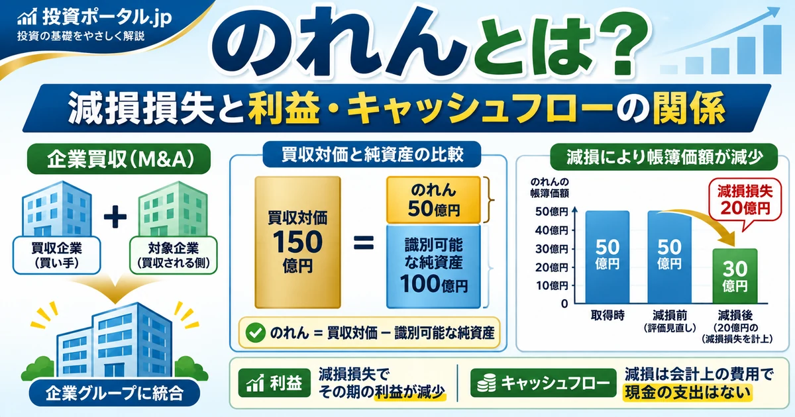

のれんとは？減損損失が発生する理由と企業の利益・キャッシュフローへの影響を初心者向けに解説
のれんとは、企業買収で取得した純資産などを超えて支払った対価のうち、会計上の要件に従って認識される部分です。買収が期待どおりに進まないと減損損失が生じる場合があります。利益と現金の違いまで、順番に整理します。

この記事の内容
のれんとは？
のれんは、企業買収などで支払った取得対価のうち、取得した識別可能な資産・負債の公正価値などだけでは説明できない部分を表す会計上の資産です。取得対価が識別可能純資産の公正価値等を上回る企業結合で認識されます。
買収先の収益力やシナジーへの期待などが背景にありますが、のれん＝ブランド価値そのもの、あるいは将来利益そのものではありません。
のれんが発生する仕組み
| 項目 | 金額 |
|---|---|
| 買収対価 | 150億円 |
| 識別可能な資産の公正価値 | 200億円 |
| 引き受けた負債の公正価値 | 100億円 |
| 識別可能純資産 | 200億円－100億円＝100億円 |
| のれん | 150億円－100億円＝50億円 |
150億円－（200億円－100億円）＝50億円
取得持分100％で非支配持分などの複雑な要素を省いた概念例です。企業結合時には資産・負債の公正価値評価や識別可能無形資産の認識などを行うため、買収対価と帳簿上の純資産の差額が、そのまま必ずのれんになるわけではありません。
のれんと無形資産の違い
| 項目 | のれん | 識別可能な無形資産 |
|---|---|---|
| 主な認識場面 | 企業結合 | 取得・開発・企業結合など |
| 個別識別 | 原則、個別識別できない残余部分 | 識別可能要件を満たす |
| 例 | 買収による超過収益力等の残余 | 特許権・商標権・顧客関連資産など |
| 償却 | 会計基準による | 耐用年数・基準による |
| 減損 | 対象 | 対象となる場合がある |
自社が長年かけて築いたブランド価値は、通常そのまま貸借対照表の「のれん」として計上されません。
のれんの償却とは？
のれんの償却は、認識したのれんを一定期間にわたって費用配分する会計処理です。日本基準では原則として20年以内の効果が及ぶ期間にわたり規則的に償却します。
のれん50億円 ÷ 10年 ＝ 年間償却費5億円
定額法で単純化した例です。毎年5億円が会計上の費用となりますが、償却のたびに5億円を新たに支払うわけではありません。実際の処理は適用基準・取得条件等に従います。
日本基準とIFRSの違い
| 項目 | 日本基準 | IFRS |
|---|---|---|
| 定期償却 | 原則あり | なし |
| 償却期間 | 原則20年以内 | 定期償却しない |
| 減損 | 兆候の把握など所定の要件に従い判定 | のれんを含むCGU等を少なくとも年1回、および兆候がある場合にテスト |
| 利益への影響 | 償却費が継続的に発生し得る。減損もあり得る | 償却費なし。減損損失が発生し得る |
IFRSでは、のれんを配分した資金生成単位（CGU）またはCGUグループについて、IAS 36に従い減損テストを行います。日本基準でも減損処理が必要な場合がありますが、判定手順は同一ではありません。
米国基準も原則としてのれんを定期償却せず減損を検討しますが、一定の企業向けの会計上の選択肢などがあり、一律に扱えません。2026年11月18日現在の適用基準と将来の提案は区別して読む必要があります。
減損損失とは？
減損損失とは、資産の帳簿価額について回収可能性などを評価した結果、適用基準の要件に従って認識する損失です。
- 帳簿価額：会計帳簿に計上されている金額
- 将来キャッシュフローの見積もり：事業が今後生み出す現金の予測
- 回収可能価額：IFRSでは処分コスト控除後の公正価値と使用価値の高い方
- 減損損失：基準に従い認識する帳簿価額の切下げ額
日本基準では減損の兆候、認識判定、測定という段階を踏み、IFRSとは判定の仕組みが異なります。
なぜのれんの減損が発生する？
買収時に見込んだ収益力を回収できない可能性が高まると、のれんを含む資産の価値を見直す必要が生じます。
- 買収先の売上・利益の悪化
- 想定したシナジーが実現しない
- 景気・市場環境の悪化、競争激化
- 事業計画の未達、将来キャッシュフロー予測の下方修正
- 金利上昇などに伴う割引率や評価額への影響
これらは兆候・評価要因の例であり、発生しただけで必ず減損損失を計上するわけではありません。
減損損失を数値で理解する
| IFRSの架空例 | 金額 |
|---|---|
| のれんを含むCGUの帳簿価額 | 200億円 |
| 回収可能価額 | 160億円 |
| 減損損失 | 40億円 |
200億円－160億円＝40億円
IFRSでは、CGUに認識した減損損失はまず配分されたのれんを減額し、残額を所定の制約の下で他の資産に配分します。したがって40億円すべてが必ずのれんの減損になるわけではありません。日本基準の減損判定にこの式をそのまま当てはめないでください。
減損損失は営業利益・純利益にどう影響する？
減損損失は損益に認識され、一般に税引前利益を押し下げます。税効果などにより純利益への影響額は同額とは限りません。
日本基準では固定資産の減損損失が特別損失に表示される場合があります。IFRSでは日本基準の経常利益・特別損益という区分を前提とせず、表示方法によって営業利益への影響も異なります。
したがって「40億円の減損＝営業利益が必ず40億円減る」とは言えません。利益区分の基礎は営業利益・経常利益・純利益の違いも参照してください。
減損損失が発生すると現金も減る？
のれんの減損は通常、計上した時点で同額の現金支出を直接伴いません。例えば40億円の減損を認識しても、「減損処理のために40億円を支払う」わけではありません。
| 区分 | 40億円の減損例 |
|---|---|
| 当期の損益 | 損失として反映（税効果等は別） |
| 減損計上そのものの現金支出 | 通常なし |
| 買収対価の支払い | 買収時の別の現金取引 |
| 将来の事業CF | 業績悪化により減る可能性あり |
買収時の現金支払い、買収後の運営費用、将来の資金不足はそれぞれ別の問題です。非資金損失であっても、背景の事業悪化を軽視できません。
減損損失と営業キャッシュフローの関係
営業CFを間接法で計算する場合、税引前利益等を出発点に、損益に含まれる非資金項目として減損損失を加算調整する場合があります。これは利益計算に含めた損失を現金収支の計算上戻す操作であり、現金が新たに流入した意味ではありません。
出発点や表示方法は会計基準・企業の方針で異なります。現金創出力の理解にはフリーキャッシュフローとは？を参照してください。
のれんとEBITDAの関係
日本基準ののれん償却費は、一般的なEBITDAの計算では償却費として足し戻される場合があります。IFRSでは通常、のれんの定期償却自体がありません。
一方、減損損失を調整後EBITDAから除外する企業もありますが、EBITDA・調整後EBITDAの定義や調整項目は企業によって異なります。減損損失が必ず除外されるとは限りません。比較前に算出方法・調整項目を確認しましょう。詳しくはEBITDAとは？へ。
のれんとROIC・ROE・ROAの関係
買収でのれんが計上されると資産や投下資本の額に影響し、償却・減損は利益に影響します。減損は税効果などを通じて自己資本にも影響する場合があります。
ROICは定義が複数あり、のれんを投下資本に含める指標と除外する指標では結果が変わります。減損後に分母が縮小し、翌期以降のROAやROICが見かけ上改善する場合もありますが、事業が改善した証拠とは限りません。詳しくはROIC・ROE・ROAの違いへ。
のれんが大きい企業は危険？
のれんが大きいだけで危険とは判断できません。買収を成長戦略として活用する企業もあります。重要なのは買収対価に見合う成果が出ているかです。
- 買収先の収益力と買収価格の妥当性
- 総資産に占めるのれんの割合と自己資本との関係
- 買収後の売上・利益、将来キャッシュフローの見通し
- 過去の減損履歴と買収後の業績推移
単一の比率ではなく、複数年の推移と事業内容を合わせて見ます。
のれんと自己資本比率・財務健全性
のれんの計上や減損により、総資産、利益、自己資本などが変動する場合があります。買収を借入で賄ったかどうかも財務構造に関係します。
分析では、のれんなどを自己資本から控除した有形純資産を補助的に見ることがあります。ただし、無形の競争力が重要な企業を、有形純資産が少ないという理由だけで危険と評価するのは適切ではありません。自己資本比率とD/Eレシオも参考にしてください。
買収後に確認したい決算情報
- 買収金額と買収対象企業の事業内容
- のれんの計上額、識別可能無形資産の内訳
- のれんの償却方針、減損の有無と理由
- 買収後の売上高・利益と事業計画の進捗
- 営業キャッシュフローの推移
- 買収に関連する有利子負債と返済計画
決算書のどこを確認する？
| 資料 | 確認ポイント |
|---|---|
| 貸借対照表（B/S） | のれん・無形資産・総資産・自己資本 |
| 損益計算書（P/L） | のれん償却費・減損損失・営業利益・税引前利益・当期純利益 |
| キャッシュフロー計算書（C/F） | 買収による現金支出・営業CF・非資金損失の調整 |
| 注記・開示資料 | 企業結合、のれん増減、減損理由、セグメント、買収先の業績 |
表示科目や開示の粒度は日本基準・IFRSや企業の状況で異なります。有価証券報告書の注記、決算説明資料も併せて確認しましょう。
のれんを見るときの注意点
- 買収価格は高すぎなかったか、将来利益の見積もりは妥当か
- のれんが増えた理由、買収先の業績悪化の有無
- 減損の理由が一時的な評価見直しか、構造的な事業問題か
- 会計基準の違いを考慮しているか
- 調整後EBITDAを過信せず、営業CFの推移を確認したか
- 買収による借入金・金利負担が増えていないか
減損が出た企業が必ず赤字や経営危機に陥るわけではありません。減損の背景と、その後の事業回復力を見極めることが大切です。
初心者向けチェックリスト
- □ のれんの発生理由を理解した
- □ 買収金額と取得した純資産を確認した
- □ 日本基準かIFRSか確認した
- □ のれんの償却方針を確認した
- □ 減損損失の有無と理由を確認した
- □ 減損と現金支出を区別した
- □ 買収後の利益推移を確認した
- □ 営業キャッシュフローを確認した
- □ 買収関連の負債を確認した
- □ ROIC・ROE・ROAも合わせて確認した
よくある質問（FAQ）
のれんとは何ですか？
企業結合で、取得対価が識別可能純資産の公正価値等を上回る場合に認識される会計上の資産です。
のれんはなぜ発生するのですか？
将来の収益力やシナジーなどを期待して、識別可能純資産の価値を上回る対価を支払うことなどが背景です。
のれんと無形資産は何が違いますか？
のれんは識別可能な資産を認識した後の残余部分で、特許など識別可能な無形資産とは区別します。
のれんはブランド価値のことですか？
いいえ。ブランド価値そのものではなく、識別可能な資産を区別した後に残る会計上の金額です。
のれんの償却とは何ですか？
のれんを一定期間にわたり費用配分する処理です。日本基準では原則20年以内に規則的に償却します。
日本基準とIFRSでは何が違いますか？
日本基準は原則として定期償却を行い、IFRSは定期償却せず年次等の減損テストを行います。
のれんの減損損失とは何ですか？
回収可能性などを評価し、基準に従ってのれんを含む資産の帳簿価額を切り下げる損失です。
減損損失が出ると営業利益は減りますか？
損益を押し下げますが、営業利益に反映されるかは会計基準・表示区分によります。
減損損失が出ると現金も減りますか？
計上そのものは通常、同額の現金支出を直接伴いません。
減損損失は営業キャッシュフローに影響しますか？
間接法では非資金損失として加算調整される場合があります。現金流入が生じたわけではありません。
のれんが大きい企業は危険ですか？
金額だけでは判断できません。買収後の収益力やCF、財務健全性と合わせて評価します。
減損損失が発生した企業は赤字になりますか？
必ずしも赤字になりません。他の利益や税効果、損失額によって結果が異なります。
のれんは決算書のどこで確認できますか？
貸借対照表の資産項目や企業結合・減損に関する注記などを確認します。
買収が成功したかどうかは何を見ればよいですか？
買収後の売上・利益、営業CF、シナジーの実現、負債、事業計画の進捗を確認します。
まとめ
- のれんは、企業買収などで認識される会計上の資産です。
- 日本基準とIFRSでは、定期償却・減損の仕組みが異なります。
- 減損損失は利益を押し下げますが、計上時に同額の現金支出を直接伴うとは限りません。
- 企業分析では、のれんの額だけでなく買収後の収益力・キャッシュフロー・財務健全性を総合的に確認しましょう。
関連記事
一次情報・参考資料
- 企業会計基準委員会（ASBJ）：企業結合に関する会計基準、固定資産の減損に係る会計基準等の公表主体
- IFRS Foundation：IFRS 3 Business Combinations
- IFRS Foundation：IAS 36 Impairment of Assets
- 金融庁 EDINET：有価証券報告書などの開示資料
ご利用にあたっての注意事項
本記事は金融教育を目的とする一般的な情報提供であり、特定銘柄の売買を推奨するものではありません。架空の数値例は実在企業の決算を示すものではありません。投資判断では最新の企業開示資料等をご確認ください。